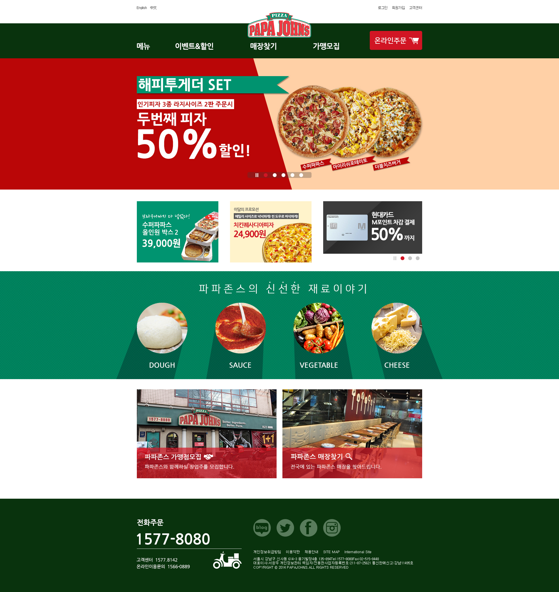
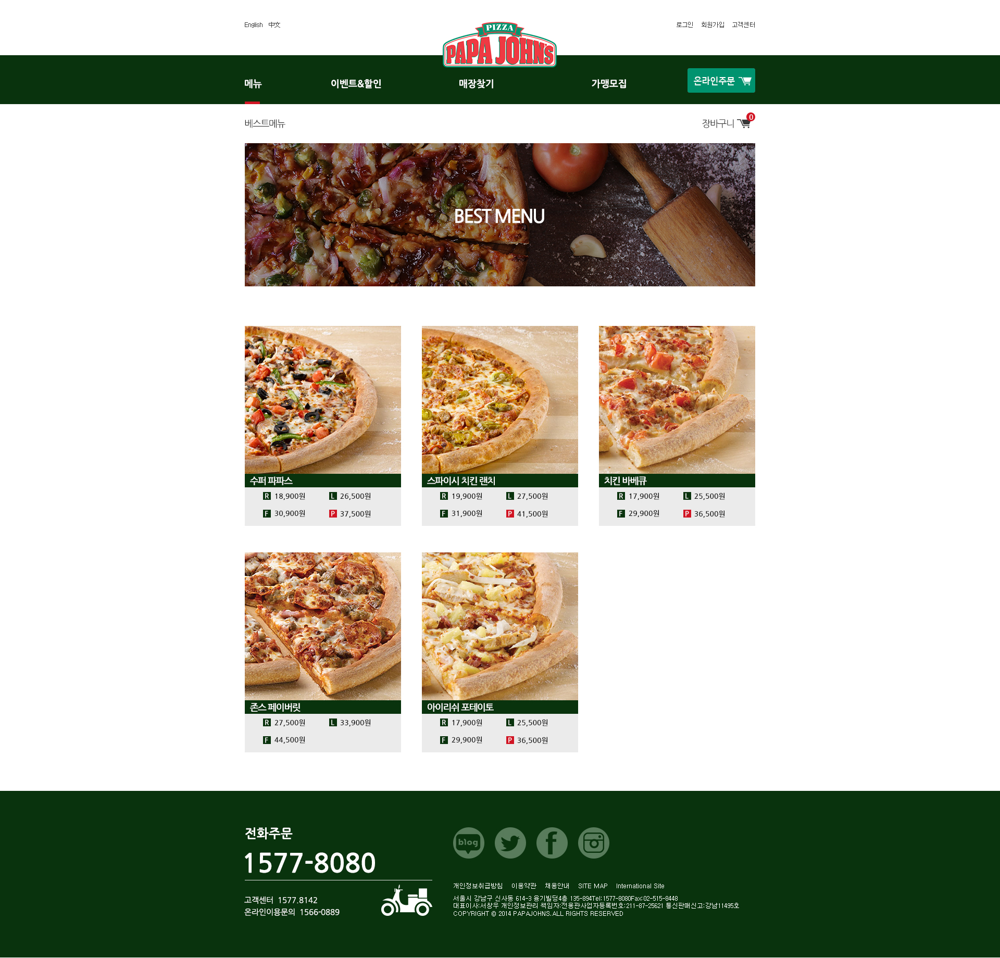
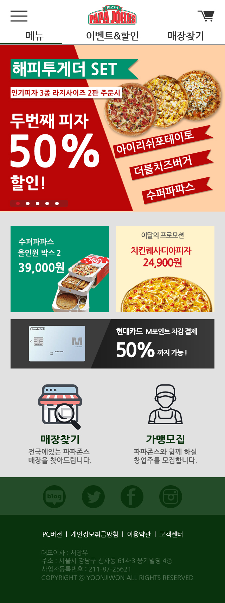

Papa John’s Renewal
목록으로



- 작업년도 : 2018
- 작업범위 : 기획 · 디자인 · 퍼블리싱
- 사용언어 : HTML, CSS, JavaScript
- 디자인툴 : Photoshop, Illustrator
- 작업설명 :
개인 포트폴리오용으로 진행한 파파존스 홈페이지 리뉴얼 작업입니다. PC와 모바일 버전으로 각각 레이아웃을 새롭게 구성했으며, 전체 UI 디자인과 메인 배너 등 비주얼 요소도 직접 제작했습니다.
퍼블리싱은 정적 페이지를 중심으로 구현했고, 슬라이드는 bxSlider 플러그인을 사용하여 처리했습니다.
PC 버전에는 서브페이지(베스트메뉴 페이지)도 추가로 제작했습니다.
브랜드 소개, 현 사이트 분석, 경쟁 사이트 분석, 기획안(스토리보드·와이어프레임) 등 프로젝트 과정은 첨부된 완료보고서(PDF)를 참고하실 수 있습니다.